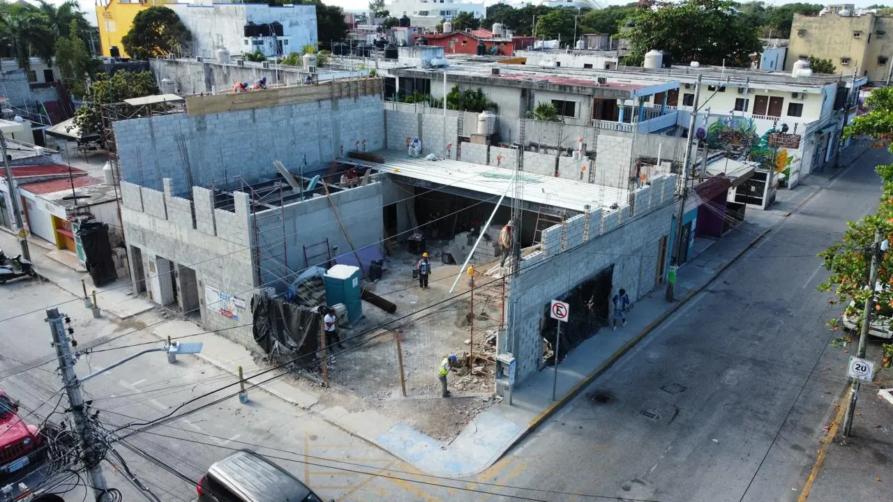

Playa del Carmen es un pueblo de restaurantes: Quinta Avenida de la Calle 1 a la 40 y más allá, el corredor gastronómico de Calle 38, los bares de Calle 12, los favoritos locales de Av. 10 y Av. 30, y los restaurantes de playa y golf en Playacar. Los locales son chicos, las rentas altas y los vecinos están cerca, así que la cocina, la extracción y la acústica deciden si un concepto funciona. Los construimos para que abran a tiempo y sigan abiertos.

Restaurantes y bares sobre la avenida, con reglas de fachada, límites de terraza y horarios de entrega restringidos.
Bares y comedores donde la acústica y la extracción protegen a los vecinos y la licencia.
Rooftop bars y restaurantes en hoteles y condominios, con revisión estructural, impermeabilización y viento.
Restaurantes y cafés premium locales en locales a pie de calle con poca carga eléctrica y gas.
Restaurantes de club, playa y golf bajo las reglas de diseño de la asociación.
Cocinas compactas y eficientes con extracción que atraviesa edificios urbanos estrechos.
Un local típico de restaurante en Playa es angosto y profundo, muchas veces con departamentos arriba. El reto es llevar la extracción a la azotea sin cruzar unidades de otros propietarios, colocar una trampa de grasa que acepte el organismo operador y conseguir carga eléctrica suficiente para equipo moderno. Revisamos antes de que firme el arrendamiento y diseñamos primero la cocina, para que el salón se construya alrededor de una cocina que funciona.
En Playa, las quejas por ruido son la forma más rápida de perder una licencia. Diseñamos plafones acústicos, fachadas selladas y equipos aislados para bares en Calle 12 y rooftops cerca de edificios residenciales. En la parte de obra preparamos la licencia o aviso de Solidaridad con DRO, requisitos de Protección Civil y planos as-built, y coordinamos con su gestor las licencias de funcionamiento y alcoholes.
| Concepto | Ubicación típica | Salón y barra (MXN/m²) |
|---|---|---|
| Café / casual premium | Av. 10, Av. 30 | $18k–$24k |
| Restaurante de chef / bar | Calle 38, Quinta Avenida | $24k–$32k |
| Rooftop / concepto de autor | Hoteles y condominios del centro | $30k–$50k |
Páginas útiles: Restaurantes y Bares Premium — Riviera Maya · Mismo servicio en Cancún · Remodelación de Hoteles en Playa del Carmen · Beach Clubs y Spas en Playa del Carmen · Remodelación de Villas en Playa del Carmen
Revisión del local, plan de cocina y acústica, programa a la apertura. Respuesta en 2 minutos.
Cotizar por WhatsAppSu opinión ayuda a otros propietarios a decidir, y a nosotros a mejorar.
Escribir una reseñaVer reseñas en Google